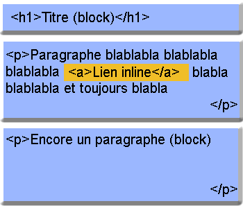
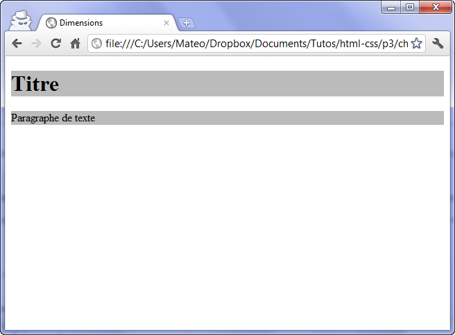
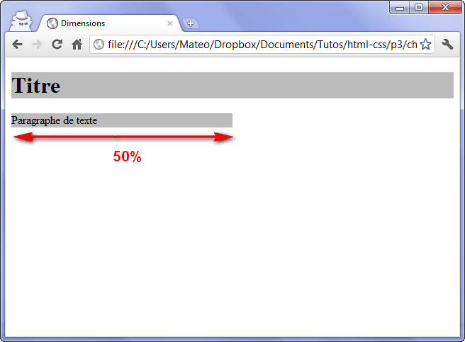
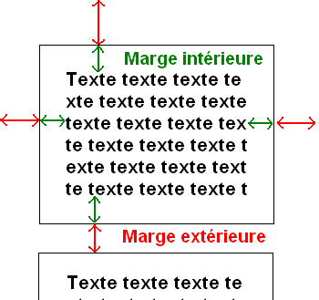
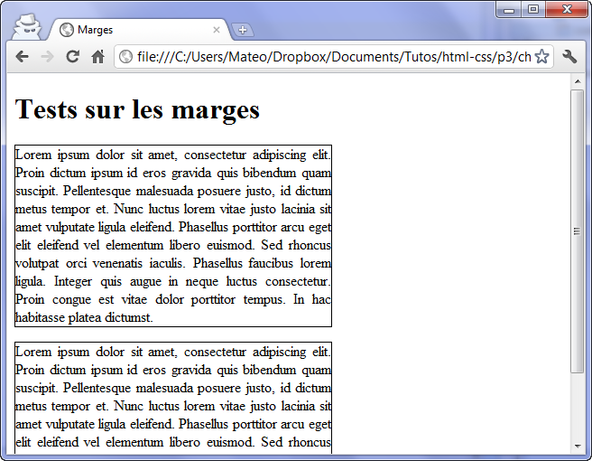
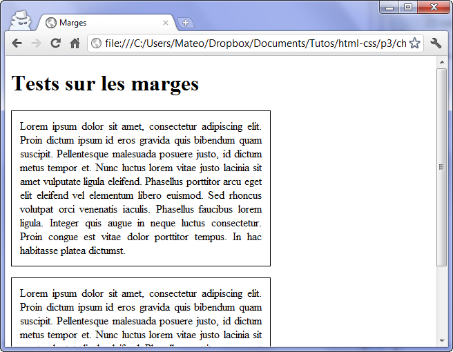
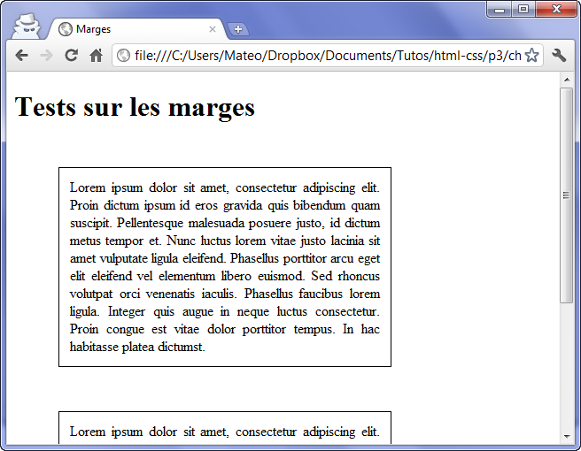

Le modèle de boîtes
Cette partie est quasi-intégralement reprise de l'excellent cours de Mathieu Nebra sur Openclassroom : Apprenez à créer votre site web avec HTML5 et CSS3
Une page web peut être vue comme une succession et un empilement de boîtes, qu'on appelle "blocs". La plupart des éléments vus au chapitre précédent sont des blocs : <header>, <article>, <nav>, etc. Mais nous connaissions déjà d'autres blocs : les paragraphes<p>, les titres<h1>, etc.
Dans ce chapitre, nous allons apprendre à manipuler ces blocs comme de véritables boîtes. Nous allons leur donner des dimensions, les agencer en jouant sur leurs marges, mais aussi apprendre à gérer leur contenu… pour éviter que le texte ne dépasse de ces blocs !
Ce sont des notions fondamentales dont nous allons avoir besoin pour mettre en page notre site web.
Les balises de type block et inline
En HTML, la plupart des balises peuvent se ranger dans l'une ou l'autre de deux catégories :
- Les balisesinline: c'est le cas par exemple des liens
<a></a> - Les balisesblock: c'est le cas par exemple des paragraphes
<p></p>.
Il existe en fait plusieurs autres catégories très spécifiques, par exemple pour les cellules de tableau (typetable-cell) ou les puces (typelist-item). Nous n'allons pas nous y intéresser pour le moment car ces balises sont minoritaires.
Mais comment reconnaître une balise inline d'une balise block ?
C'est en fait assez facile :
- block: une balise de type block sur votre page web crée automatiquement un retour à la ligne avant et après. Il suffit d'imaginer tout simplement un bloc. Votre page web sera en fait constituée d'une série de blocs les uns à la suite des autres. Mais vous verrez qu'en plus, il est possible de mettre un bloc à l'intérieur d'un autre, ce qui va augmenter considérablement nos possibilités pour créer le design de notre site !
- inline: une balise de type inline se trouve obligatoirement à l'intérieur d'une balise block. Une balise inline ne crée pas de retour à la ligne, le texte qui se trouve à l'intérieur s'écrit donc à la suite du texte précédent, sur la même ligne (c'est pour cela que l'on parle de balise "en ligne").
Depuis HTML5, la catégorisation des différents éléments est un peu plus complexe que cela. Cependant, cette petite simplification va vous permettre de bien comprendre la différence entre le concept de "bloc" et le concept de "en ligne".
Pour bien visualiser le concept, voici un petit schéma :

- Sur fond bleu, vous avez tout ce qui est de type block.
- Sur fond jaune, vous avez tout ce qui est de type inline.
Comme vous pouvez le voir, les blocs sont les uns en-dessous des autres. On peut aussi les imbriquer les uns à l'intérieur des autres.
La balise inline<a></a>, elle, se trouve à l'intérieur d'une balise block et le texte vient s'insérer sur la même ligne.
Si vous voulez avoir la liste complète des balises qui existent et savoir si elles sont de type inline ou block, reportez-vous à l'annexe donnant la liste des balises HTML.
Les balises universelles
Vous les connaissez déjà car je vous les ai présentées il y a quelques chapitres. Ce sont des balises qui n'ont aucun sens particulier (contrairement à <p> qui veut dire "paragraphe", <strong> "important", etc.).
Le principal intérêt de ces balises est que l'on peut leur appliquer une class pour le CSS quand aucune autre balise ne convient.
Il existe deux balises génériques et, comme par hasard, la seule différence entre les deux est que l'une d'elle est inline et l'autre est block :
<span></span>(inline) ;<div></div>(block).
Respectez la sémantique !
Les balises universelles sont "pratiques" dans certains cas, certes, mais attention à ne pas en abuser. Je tiens à vous avertir de suite : beaucoup de webmasters mettent des <div> et des <span> trop souvent et oublient que d'autres balises plus adaptées existent.
- Exemple d'un span inutile :
<span class="important">. Je ne devrais jamais voir ceci dans un de vos codes alors qu'il existe la balise<strong>qui sert à indiquer l'importance ! - Exemple d'un div inutile :
<div class="titre">. Ceci est complètement absurde puisqu'il existe des balises faites spécialement pour les titres (<h1>,<h2>…).
Vous allez me dire qu'au final le résultat (visuel) est le même. Je suis tout à fait d'accord. Mais les balises génériques n'apportent aucun sens à la page et ne peuvent pas être comprises par l'ordinateur. Utilisez toujours d'autres balises plus adaptées quand c'est possible. Google lui-même le conseille pour vous aider à améliorer la position de vos pages au sein de ses résultats de recherche !
Les dimensions
Nous allons ici travailler uniquement sur des balises de type block.
Pour commencer, intéressons-nous à la taille des blocs. Contrairement à un inline, un bloc a des dimensions précises. Il possède une largeur et une hauteur. Ce qui fait, ô surprise, qu'on dispose de deux propriétés CSS :
width: c'est la largeur du bloc. À exprimer en pixels (px) ou en pourcentage (%).height: c'est la hauteur du bloc. Là encore, on l'exprime soit en pixels (px), soit en pourcentage (%).
Pour être exact, width et height représentent la largeur et la hauteur du contenu des blocs. Si le bloc a des marges (on va découvrir ce principe un peu plus loin), celles-ci s'ajouteront à la largeur et la hauteur.
Par défaut, un bloc prend 100% de la largeur disponible. On peut le vérifier en appliquant à nos blocs des bordures ou une couleur de fond (figure suivante).

Maintenant, rajoutons un peu de CSS afin de modifier la largeur des paragraphes. Le CSS suivant dit : « Je veux que tous mes paragraphes aient une largeur de 50% ».
p
{
width: 50%;
}
Le résultat est visible à la figure suivante : 
Les pourcentages seront utiles pour créer un design qui s'adapte automatiquement à la résolution d'écran du visiteur.
Toutefois, il se peut que vous ayez besoin de créer des blocs ayant une dimension précise en pixels :
p
{
width: 250px;
}
Minimum et maximum
On peut demander à ce qu'un bloc ait des dimensions minimales et maximales. C'est très pratique car cela nous permet de définir des dimensions « limites » pour que notre site s'adapte aux différentes résolutions d'écran de nos visiteurs :
min-width: largeur minimale ;min-height: hauteur minimale ;max-width: largeur maximale ;max-height: hauteur maximale.
Par exemple, on peut demander à ce que les paragraphes occupent 50% de la largeur et exiger qu'il fassent au moins 400 pixels de large dans tous les cas :
p
{
width: 50%;
min-width: 400px;
}
Observez le résultat en modifiant la largeur de la fenêtre de votre navigateur. Vous allez voir que, si celle-ci est trop petite, le paragraphe se force à occuper au moins 400 pixels de largeur.
Les bordures
Le CSS vous offre un large choix de bordures pour décorer votre page. De nombreuses propriétés CSS vous permettent de modifier l'apparence de vos bordures : border-width, border-color, border-style, etc.
Je vous renvoie à la partie bordures des éléments dans ma présentation
La propriété border-radius va nous permettre d'arrondir facilement les angles de n'importe quel élément. Il suffit d'indiquer la taille ("l'importance") de l'arrondi en pixels :
p{
border-radius:10px;
}
Les marges
Il faut savoir que tous les blocs possèdent des marges. Il existe deux types de marges :
- les marges intérieures ;
- les marges extérieures.
Regardez bien le schéma qui se trouve à la figure suivante.

Sur ce bloc, j'ai mis une bordure pour qu'on repère mieux ses frontières.
- L'espace entre le texte et la bordure est la marge intérieure (en vert).
- L'espace entre la bordure et le bloc suivant est la marge extérieure (en rouge).
En CSS, on peut modifier la taille des marges avec les deux propriétés suivantes :
padding: indique la taille de la marge intérieure. À exprimer en général en pixels (px).margin: indique la taille de la marge extérieure. Là encore, on utilise le plus souvent des pixels.
Les balises de type inline possèdent également des marges. Vous pouvez donc aussi essayer ces manipulations sur ce type de balises.
Pour bien voir les marges, prenons deux paragraphes auxquels j'applique simplement une petite bordure (figure suivante) :
p
{
width: 350px;
border: 1px solid black;
text-align: justify;
}

Comme vous pouvez le constater, il n'y a par défaut pas de marge intérieure (padding). En revanche, il y a une marge extérieure (margin). C'est cette marge qui fait que deux paragraphes ne sont pas collés et qu'on a l'impression de « sauter une ligne ».
Les marges par défaut ne sont pas les mêmes pour toutes les balises de type block. Essayez d'appliquer ce CSS à des balises<div>qui contiennent du texte, par exemple : vous verrez que, dans ce cas, il n'y a par défaut ni marge intérieure, ni marge extérieure !
Supposons que je veuille rajouter une marge intérieure de 12 px aux paragraphes (figure suivante) :
p
{
width: 350px;
border: 1px solid black;
text-align: justify;
padding: 12px; /* Marge intérieure de 12px */
}

Maintenant, je veux que mes paragraphes soient plus espacés entre eux. Je rajoute la propriétémarginpour demander à ce qu'il y ait 50 px de marge entre deux paragraphes (figure suivante) :
p
{
width: 350px;
border: 1px solid black;
text-align: justify;
padding: 12px;
margin: 50px; /* Marge extérieure de 50px */
}

Notez quemargin(commepaddingd'ailleurs) s'applique aux quatre côtés du bloc.
Si vous voulez spécifier des marges différentes en haut, en bas, à gauche et à droite, il va falloir utiliser des propriétés plus précises.
En haut, à droite, en bas, à gauche, … Et on recommence !
L'idéal serait que vous reteniez les termes suivants en anglais :
- top: haut ;
- bottom: bas ;
- left: gauche ;
- right: droite.
Ainsi, vous pouvez retrouver toutes les propriétés de tête.
Je vais quand même vous faire la liste des propriétés pourmarginetpadding, histoire que vous soyez sûrs que vous avez compris le principe.
Voici la liste pourmargin:
margin-top: marge extérieure en haut ;margin-bottom: marge extérieure en bas ;margin-left: marge extérieure à gauche ;margin-right: marge extérieure à droite.
Et la liste pourpadding:
padding-top: marge intérieure en haut ;padding-bottom: marge intérieure en bas ;padding-left: marge intérieure à gauche ;padding-right: marge intérieure à droite.
Il y a d'autres façons de spécifier les marges avec les propriétésmarginetpadding. Par exemple :
margin: 2px 0 3px 1px;signifie "2 px de marge en haut, 0 px à droite (le px est facultatif dans ce cas), 3 px en bas, 1 px à gauche".
Autre notation raccourcie :margin: 2px 1px;signifie "2 px de marge en haut et en bas, 1 px de marge à gauche et à droite".
Je vous renvoie également à la partie marge des éléments dans ma présentation
En résumé
On distingue deux principaux types de balises en HTML :
- Le type block (
<p>,<h1>, etc.) : ces balises créent un retour à la ligne et occupent par défaut toute la largeur disponible. Elles se suivent de haut en bas. - Le type inline (
<a>,<strong>, etc.) : ces balises délimitent du texte au milieu d'une ligne. Elles se suivent de gauche à droite. - On peut modifier la taille d'une balise de type block avec les propriétés CSS
width(largeur) etheight(hauteur). - On peut définir des minima et maxima autorisés pour la largeur et la hauteur :
min-width,max-width,min-height,max-height. - Les éléments de la page disposent chacun de marges intérieures (
padding) et extérieures (margin).
À vous de jouer
- Reprenez le site ; ou téléchargez cette base.
- En CSS, en jouant avec les propriétés de taille et de marge, limitez la largeur du contenu de votre page ou d'une partie de votre page (la
<section>principale par exemple).